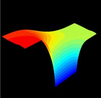

InSb FET IV curves

|
InSb FET IV curves |
 |
In the following, we present some IV curves calculated by means of Archimedes. These curves show the electric features of an quantum well InSb FET (Field Effects Transistor). The structure of such a device is schematically reported in the following picture.
Starting from the top of the device, we have a 20 nanometers Al0.2In 0.8Sb layer with the Source (Ohmic contact), the Gate (Schottky contact) and the Drain (Ohmic contact again). Then we have the InSb quantum well with a thikness equal to 50 nanometers. Finally, we find a 0.5 micron Al 0.2In 0.8Sb again along with a Schottky contact with an applied potential equal to -0.5 Volt (also known as the bulk potential).
Archimedes is well suited for such heterostructures since it is able to quantum mechanically calculate the transmission and reflection coefficient for the particles at such heterojunctions.
Varying the applied potential on the various contacts of this device, it is possible to calculate its IV curves. This has been done by means of Archimedes, our 2D semiconductor device simulator.
In the following we report three IV curves obtained by Archimedes, with the following applied potentials :
Vsource = 0.0, Vbulk = -0.5, Vgate = -0.2, 0.0, +0.2, Vdrain = from 0.0 to 0.5

Finally, we report the following IV curve obtained by Archimedes, with the following applied potentials:
Vsource = 0.0, Vbulk = -0.5, Vgate = from -0.5 to +0.5, Vdrain = 0.5
{kind=link}